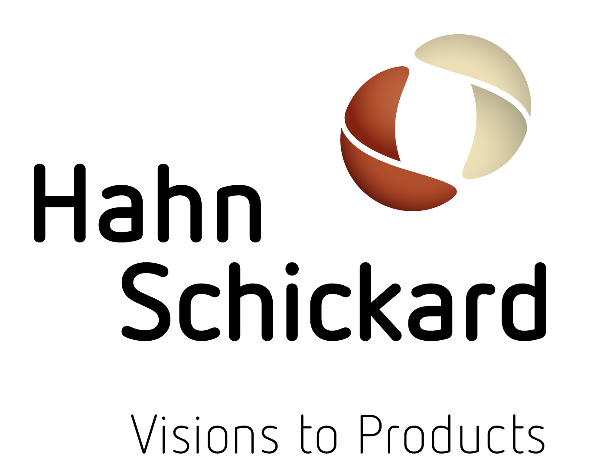

About us
 Hahn-Schickard-Gesellschaft für angewandte Forschung e.V. :
We develop intelligent products for you with microsystem technology: from first conception to production.
Working in close partnership with the industry, Hahn-Schickard provides innovative products and technologies in the areas of sensors and actuators, system integration,
cyber-physical systems, communication technology, software development, lab-on-a-chip and analytics, microelectronics, mounting and connection technology, micromounting,
and reliability. Our services include the production of small and medium-sized series, as well as the transition to mass production.
What are our team core competencies:
- Software Engineering
- Data models
- Communication interfaces (e.g. Gateways)
- Data processing
- Model-driven development
- App and Web development
- Visualisation
STAG Development Group members:
- Dovydas Girdvainis
- Gerhard Marki
- Christoph Rathfelder